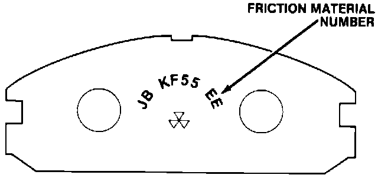
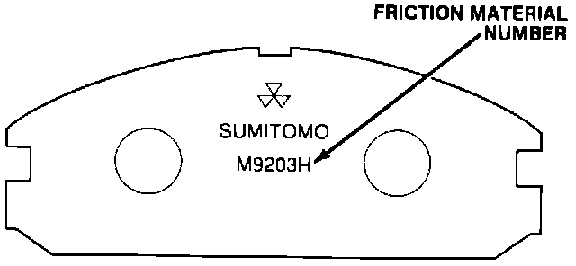
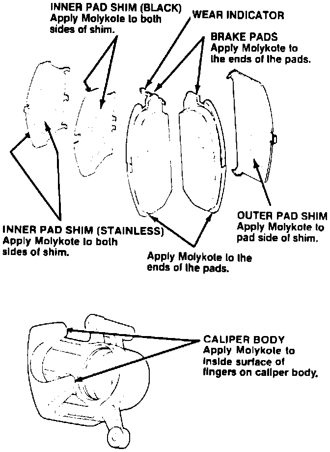

Brakes - Selecting Front Brake Pads
June 20, 1988BULLETIN NO.: 88-012
YEAR '86-'87
MODEL INTEGRA
VIN APPLICATION ALL
Integra Front Brake Pad Selection
SUBJECT
Replacement front brake pads for '86-88 Integras are available with two types of non-asbestos friction material. Install whichever type best suits the individual driver's needs.

The original equipment friction material offers the longest service life, but is more prone to moan or squeal when the brakes are applied lightly. These pads are numbered "JB KF55 EE" on the back.

The optional friction material is less likely to make noise, but won't last as long as the the original equipment type. These pads are numbered "M9203H" on the back.
NOTE:
The surface finish of a used disc can cause noise with the M9203H pads. Before installing these pads, refinish the discs with the Kwik-Way Kwik Lathe and Power Feed, or the Snap-on Front Disc Brake Lathe and Power Feed.

Apply Molykote N477 thinly and evenly, as shown:
make sure it doesn't contaminate the friction material.
Break in the new pads by lightly applying the brakes and decelerating from 35 MPH to a complete stop.. Do this 20 minutes.
PARTS INFORMATION
JB KF55 EE brake pads (original equipment type):
P/N 45022-SD2-A11
M9203H brake pads (optional type):
P/N 45022-SE0-325